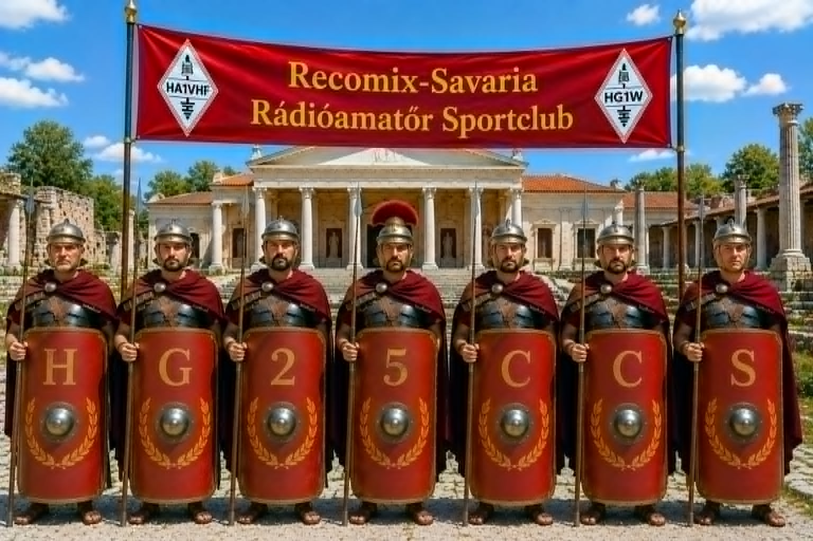

A Recomix-Savaria Rádióamatőr Sportclub
a 25. Savaria Történelmi Karnevált népszerűsítő rádiós aktivitást rendez.
The Recomix-Savaria Amateur Radio Sports Club
is organizing a radio activity to promote the 24th Savaria Historical Carnival.
A diploma elnyeréséhez 3 összeköttetést kell létesíteni a HG25CCS hívójellel. Az összeköttetéseknek különböző sávokban vagy különböző üzemmódokban kell létrejönniük. Átjátszókon keresztül való összeköttetés nem érvényes.
To receive a certificate 3 contacts needs to be made with the HG25CCS station. The contacts needs to be at different bands or in different modes. The contact via repeater are not valid.
| Aktivitás kezdeteStart of activity | 2026. augusztus 1. 00:00 UTC1 August 2025, 00:00 UTC |
| Aktivitás végeEnd of activity | 2025. augusztus 16. 23:59 UTC16 August 2025, 23:59 UTC |
| Érvényes sávokValid bands | 160m - 70cm |
| Érvényes üzemmódokValid modes | CW, SSB, FM, DIGI |
Nem kérünk és nem küldünk QSL lapot. Köszönjük! We do not request and do not send QSL cards. Thank you!
Savaria, a római császár, Claudius által Kr.u. 45-ben alapított város, eredetileg colonia Claudia Savariensum néven vált ismertté. A település Pannonia Superior provincia fővárosává nőtte ki magát, és a római birodalom egyik jelentős kulturális és politikai központjává vált. A város különlegessége, hogy a híres Borostyánút mentén helyezkedett el, amely a kereskedelem és az áruforgalom fő útvonala volt. A római időkben született itt Tours-i Szent Márton, aki később a harmadik püspöke lett Tours városának, és akinek hite és jósága egész Európában ismertté vált. Savaria was established in AD 45 by Emperor Claudius as colonia Claudia Savariensum and became the capital of Pannonia Superior. The famous Amber Road (Latin: Via Sucinaria) ran along the city, which was an important commercial and governmental center. Saint Martin was born during Roman times and later became the third bishop of Tours.
Minden év augusztusában Szombathely megrendezi a Savaria Történelmi Karnevált. Az esemény ideje alatt számos színes program várja a látogatókat, köztük kézműves termékeket árusító standok, koncertek, gasztronómiai élmények és gyermekeknek szóló programok. A Karnevál csúcspontja az esti jelmezes felvonulás, amely életre kelti Szombathely (Savaria) kétezer éves történelmét. The Savaria Historical Carnival is organized every year in August by the city of Szombathely. During this period, the town centre takes visitors on a journey to the past. Throughout the event, countless colorful programs are offered to visitors. Stalls offering handmade products, concerts, gastronomic experiences, and child-friendly programs welcome the guests. The highlight of the Carnival is the costume parade (in the evening), which brings to life the 2,000-year-old history of Szombathely (Savaria).
További részletekért látogasson el a Karnevál hivatalos weboldalára és a Savaria karnevál facebook oldalára Further information on the official website of the Carnival. and the facebook page
For further information please contact: hamradiosavaria@gmail.com További információ az aktivitással kapcsolatban: hamradiosavaria@gmail.com